| 日付 | 2012年4月28日（土） - 2012年4月30日（月） | ||||
|---|---|---|---|---|---|
| 山域 | 駿河 | ||||
| メンバー | 家族（妻、長女・1歳） | ||||
| 山行形態 | 子連れ2泊3日ホテル泊 | ||||
| アクセス | 車 | ||||
| ルート |
|
3日目
今日は安倍川に架かる吊橋見学をしながら帰る予定だ。
静岡県は吊橋の多いところで、安倍川にもいくつかの吊橋が架かっている。
最初の吊橋は茶畑の中の細い道を歩くと現れる。

新田の吊橋。
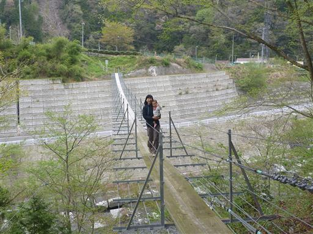
この吊橋は道路の上部に架けられている。
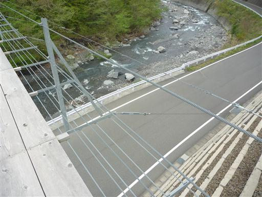
赤水の滝に寄り道する。安倍の大滝に負けない立派な滝だ。
安倍の大滝と違ってこちらの滝は近くに駐車場があるのでアクセスが楽だ。
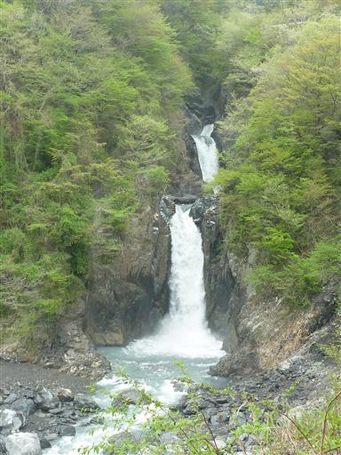
孫佐島の吊橋。吊橋を渡った先はキャンプ場になっている。
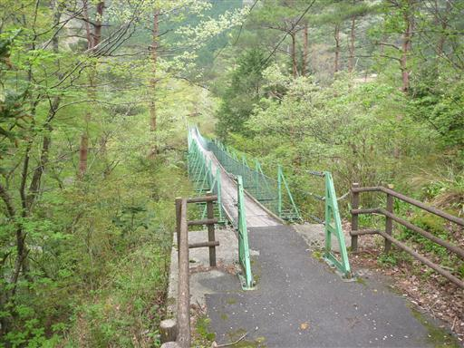
入島の吊橋。長さ100m以上の長い吊橋だ。
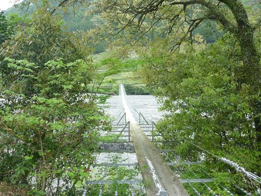
吊橋を渡った先には茶畑が広がっている。
この辺りの吊橋は畑作業用に架けられているようだ。
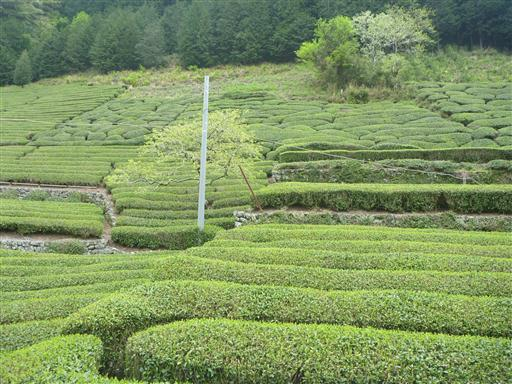
渡本の吊橋。
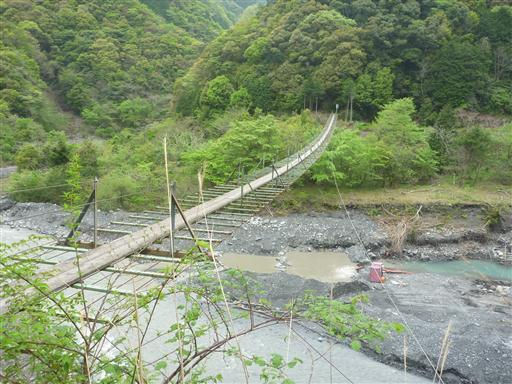
渡の吊橋。この吊橋は主塔があって上から吊っているため頑丈そうだ。
これまでの吊橋は1名ずつ渡るように書かれていたが、
この吊橋はところどころにすれ違いポイントがあり、数名は乗れそうだ。
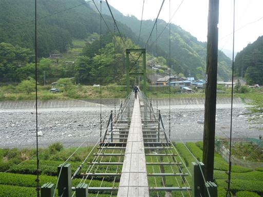
中平の吊橋。
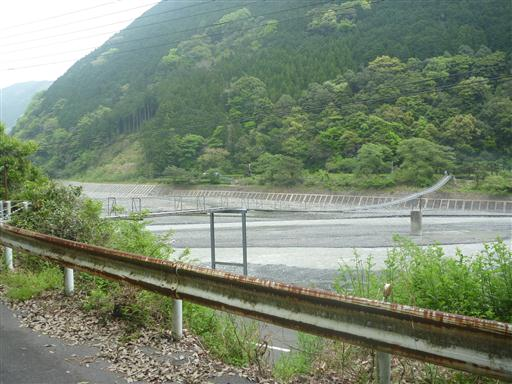
吊橋からの風景。この吊橋も車道の上に架けられている。
だいぶ下流まで来たので、安倍川の川幅はだいぶ広くなっている。

真富士の里に寄り道する。地産品が売られている。
お土産にコンニャクと茶葉を購入。
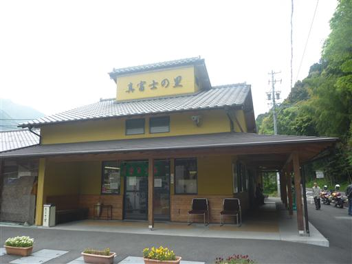
続いて次の吊橋に向かう。こちらは蕨野の吊橋。
3径間の美しい吊橋だ。
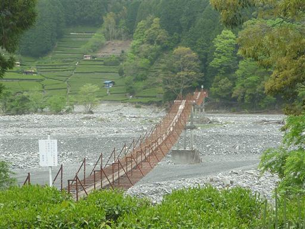
最後に訪れたのが相渕橋。長さ200mを超える長い吊橋だ。
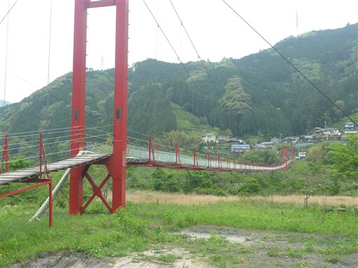
この橋は比較的有名らしく数人の観光客が訪れている。
橋の幅は広く、すれ違うのは容易だ。
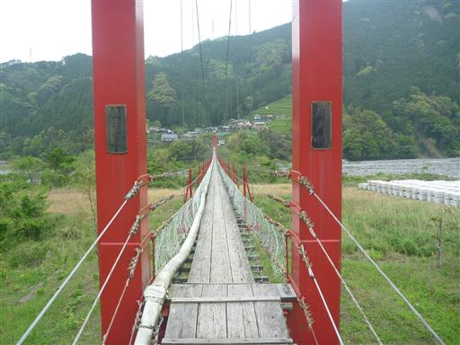
橋を渡った先には茶畑と集落がある。ちょうど茶摘みが行われている。

安倍川を離れ、次なる目的地・富士サファリパークに向かう。
途中、新東名高速道路のサービスエリアに寄るが大混雑。
広々とした駐車場には路駐が多く、混乱気味だ。
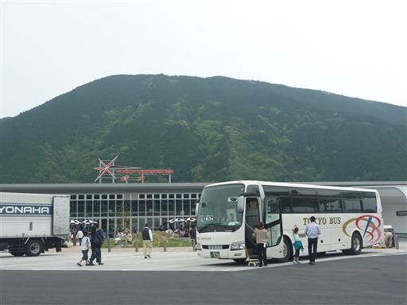
新東名を下りて富士サファリパークに向かう途中、道路を横断するキジを発見。
こんなところでキジに出会えるとは…

富士サファリパークに到着。思いの外混雑している。
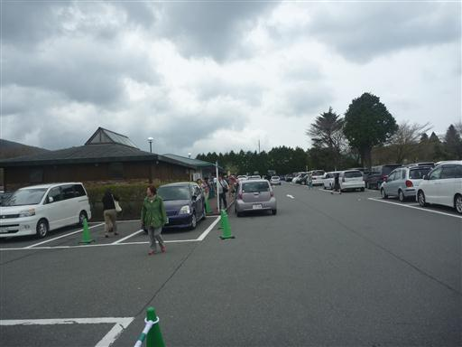
富士サファリパークはいくつかのゾーンに分かれている。
メインのサファリゾーンに向かったが大混雑。
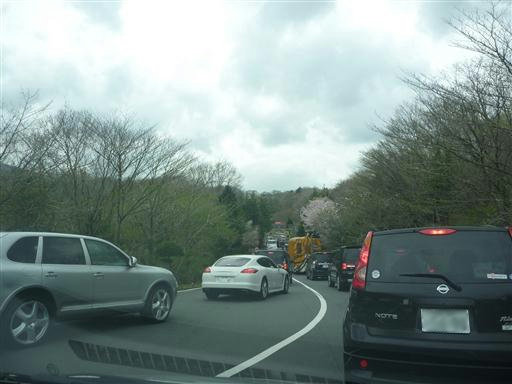
園内をまわるバスには、餌でおびき寄せているため動物が群がる。
残念ながら車には近寄って来ない。
バスに乗るのは魅力的なのだが、結構料金が高いのだ…
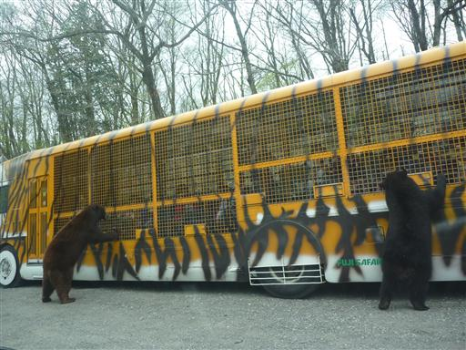
トラ。
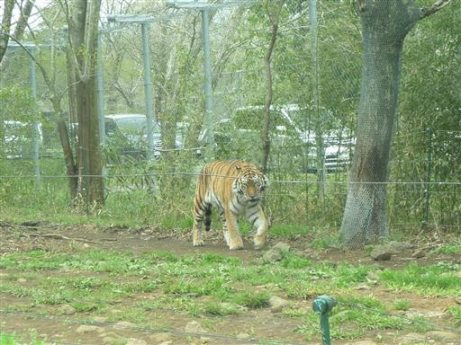
サイ。
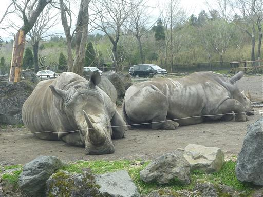
喧嘩中のエランド。職員に怒られたら喧嘩を止めた。
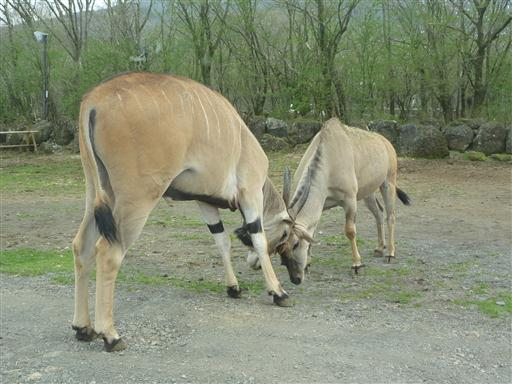
ヤク。
何というか…全体的に動物より車の方が目立ってる気がする…
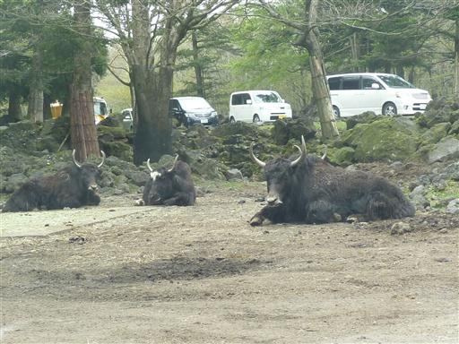
サファリゾーンを一周したら、次にふれあい牧場に行ってみる。
カンガルーやヒヨコなど、様々な動物とふれあえる。
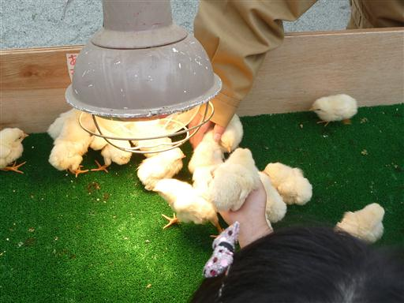
夕方になってサファリゾーンが空いてそうだったので、もう一周まわってみることにする。
クマが車に襲い掛かっている。このクマも職員に怒られて去っていった。
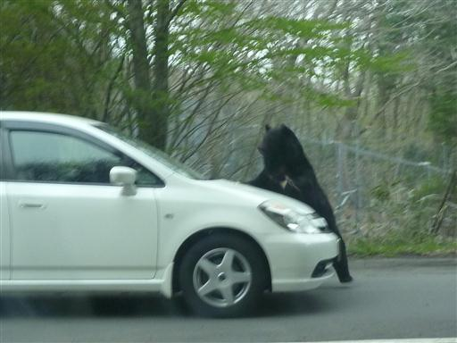
ライオン。
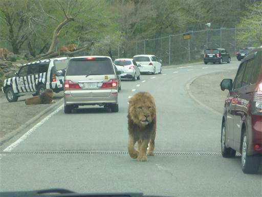
キリン。
道路を自由にを歩く動物たち。やっぱりサファリパークはこうでないといけない。
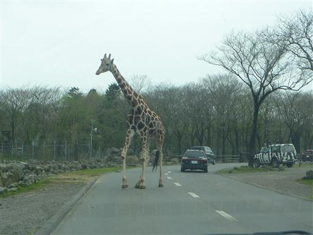
車のすぐそばを動物が歩いていく。なかなか面白い体験だ。
昨日の疲れか途中で体調を崩してしまう。
帰りは大渋滞の中、運転をまかせ、自分はダウンしてしまった…
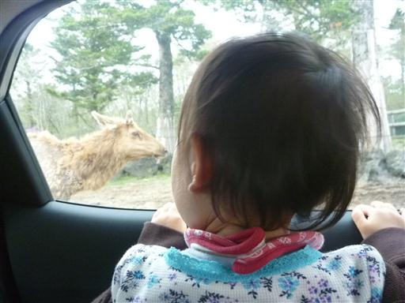